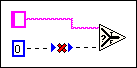

You have connected to a polymorphic terminal that does not accept this wire type because of the wire types that are connected to other terminals.
To correct this error, examine the terminals connected to the wire and change the node to make the wire type acceptable. Refer to the documentation for the node for more information about correcting this error.